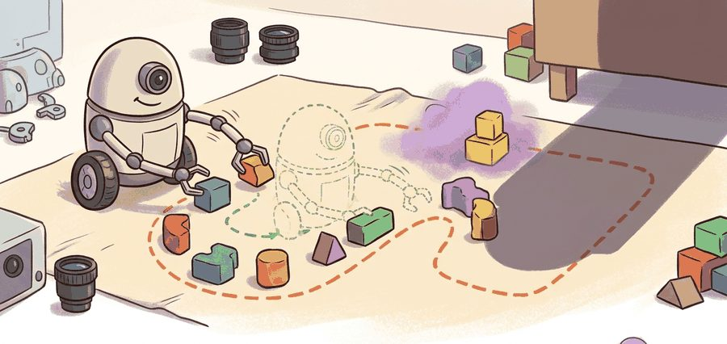
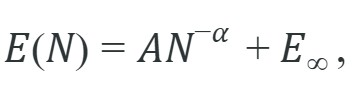
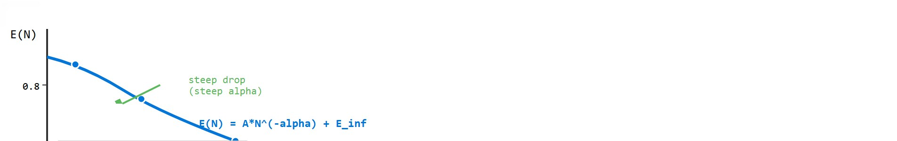

"The curve kept improving, but only after we stopped mixing validation splits like smoothie ingredients."
A Careful Curve Fitter

This section assumes familiarity with the imitation learning setup introduced in section 21.2 and with action representations covered in section 22.7. The scaling ideas developed here are applied directly in section 24.5, which addresses data curation and mixture strategies, and connect to evaluation methodology in section 52.2, where matched protocols for measuring policy performance are treated in depth.
This section teaches you how to measure and interpret a data scaling law in imitation learning: how error falls as the demonstration count grows, what the scaling exponent and irreducible floor mean, and why a curve is trustworthy only when every point is computed under one matched evaluation protocol (a scaling law is the empirical relationship between dataset size and policy error). As Figure 24.4A illustrates, the curve becomes useful only when data size, model capacity, task coverage, and evaluation splits are all measured under that single protocol. In a representative case, a lab doubles its demonstration count from 500 to 50,000 and watches failure rate drop from 40% to 8%. A rival lab runs a similar experiment and sees almost no improvement. Same task, same robot family, different result. The gap almost always traces to a measurement problem: one team held evaluation conditions constant across every data point, and the other did not. Scaling laws are now the central planning tool for robot data investment, because the field is spending millions of dollars on demonstration collection. Getting the curve right, by locking the evaluation panel, split policy, and metric before touching any data, is the skill that turns an expensive scatter plot into a genuine engineering signal.
A common empirical form is:

where $E(N)$ is an error or failure rate after training on $N$ demonstrations, $\alpha$ is the scaling exponent, and $E_{\infty}$ is the irreducible floor under the current setup. The RT-1 and RT-2 evaluations at Google DeepMind and the DROID benchmark from Stanford and UC Berkeley report 1-minus-success-rate rather than raw success. This per-rollout failure fraction over a fixed task panel has a natural decreasing trend that fits the power law cleanly. This formulation assumes a well-controlled imitation learning setup where the data distribution holds steady between teleop collection and on-robot evaluation. Recalibrating a Franka Panda or nudging a wrist camera between training-data capture and the rollout sweep violates exactly that condition.
The irreducible floor $E_{\infty}$ matters in embodied AI because physical systems have hard failure modes that data volume cannot fix. Joint backlash, calibration drift, sensor noise, and operator-induced bias in teleoperation (teleop) demonstrations all create a residual failure rate that persists regardless of dataset size. A policy trained on one million trajectories still fails when the real gripper's compliant finger deforms differently from every demonstration it saw. Ignoring $E_{\infty}$ leads teams to overspend on data collection when the actual bottleneck is hardware or action representation. Figure 24.4B below sketches this shape: a steep early drop in error followed by a plateau at the irreducible floor.

Mechanically, the floor emerges because the imitation objective minimizes average loss over the collected distribution. Tasks or object poses near the tail of that distribution appear so rarely that even large datasets leave them underrepresented. The policy converges to low average error, but performance on rare configurations plateaus. Fitting the three-parameter model rather than a pure log-log regression (a linear fit between the logarithm of demonstration count and the logarithm of error, which recovers the scaling exponent as its slope) separates this structural ceiling from genuine data-driven improvement.
Think of baking a sourdough loaf in an oven that runs 20 degrees too cool. You can use better flour, more precise measurements, and a finer technique, and the bread will keep improving up to a point. But that last 20 degrees of oven temperature is a structural ceiling: no amount of extra skill or better ingredients overcomes it. The irreducible floor $E_\infty$ works the same way. Adding demonstrations refines the policy, but joint backlash, sensor noise, and distributional gaps in the operator pool are the cold oven, and they set a hard lower bound on failure rate that more data simply cannot reach past.
A scaling curve is not proof that more data solves the task. It tells you whether the current data source, model class, and evaluation panel still reward more data.
Use Weights & Biases, MLflow, or a simple checked-in run table to bind every scaling point to one config, split manifest, and result artifact. The library handles run indexing and plots; the scientific responsibility is keeping the comparison construct-matched.
Input: Dataset sizes $N_1 < N_2 < \cdots < N_k$; matched evaluation panel $\mathcal{P}$ (fixed split, metric, robot, and policy architecture); trained policies $\pi_1, \ldots, \pi_k$ one per $N_i$
Output: Scaling exponent $\hat{\alpha}$, floor estimate $\hat{E}_\infty$, residual diagnostics (per-task gaps between the fitted curve and the observed error, computed in step 7 below), and one artifact per point
So far: you have locked every experimental control before touching data, trained one policy per dataset size from scratch under those frozen controls, and evaluated each policy on the same panel to get one aggregate error point per dataset size; the next steps turn that raw list of points into a fitted curve with an exponent and a floor.
Code Fragment 1 fits a line in log-log space to estimate a rough scaling exponent. The example uses small synthetic numbers so the arithmetic is transparent.
# Estimate a rough imitation-learning scaling exponent from matched runs.
# Every point must come from the same robot, split, metric, and training recipe.
import math
demo_counts = [100, 300, 1000, 3000]
failure_rates = [0.42, 0.30, 0.20, 0.14]
x = [math.log(n) for n in demo_counts]
y = [math.log(e) for e in failure_rates]
x_bar = sum(x) / len(x)
y_bar = sum(y) / len(y)
slope = sum((xi - x_bar) * (yi - y_bar) for xi, yi in zip(x, y)) / sum((xi - x_bar) ** 2 for xi in x)
alpha = -slope
print("alpha:", round(alpha, 2))Trace the log-log fit with the actual numbers from Code Fragment 1. The points are (N, failure) = (100, 0.42), (300, 0.30), (1000, 0.20), (3000, 0.14). First take natural logs: x = ln N = [4.605, 5.704, 6.908, 8.006], y = ln E = [-0.868, -1.204, -1.609, -1.966]. Compute means: x_bar = 25.223 / 4 = 6.306, y_bar = -5.647 / 4 = -1.412. Now the deviations for the slope. Numerator, sum of (x_i - x_bar)(y_i - y_bar): (-1.701)(0.544) + (-0.602)(0.208) + (0.602)(-0.197) + (1.700)(-0.554) = -0.925 - 0.125 - 0.119 - 0.942 = -2.111. Denominator, sum of (x_i - x_bar)^2: 2.893 + 0.362 + 0.362 + 2.890 = 6.507. Slope = -2.111 / 6.507 = -0.324, so alpha = -slope = 0.32. The negative slope confirms failure falls as demonstrations grow, and the 0.32 magnitude matches the printed output exactly.
The log-log regression in Code Fragment 1 assumes the irreducible floor $E_{\infty}$ is zero. When failure rates plateau above zero (a common outcome with broad task panels), subtract a floor estimate before taking the log: fit a three-parameter curve using scipy.optimize.curve_fit with the model lambda n, A, alpha, floor: A * n**(-alpha) + floor, and verify the fitted floor is plausible (typically 5 to 20 percent for table-top manipulation). Skipping this step causes log-log regression to return an exponent that is artificially low, making the data look less useful than it is.
Read the output alpha: 0.32 as a local empirical summary, not a universal robotics constant. Under this exact synthetic panel, each multiplicative increase in demonstrations cuts failure at a rate matching a log-log slope near 0.32. A real paper owes more: confidence intervals, seeds, task-level scatter, and whether the fit survives dropping the largest or smallest point.
Those caveats all reduce to a single demand: the exponent only means something when every point on the curve was produced under identical conditions, which forces a precise account of what each point actually represents.
A single point on a robot scaling curve is a bundle of choices: dataset subset, task panel, model capacity, action representation, training compute, evaluation seed policy, and success metric. If any of those choices changes between points, the plot may still describe a useful engineering trend, but it no longer isolates data scale. A scaling curve built without a locked, construct-matched evaluation panel is not a measurement of data value; it is a measurement of experimental drift. Serious scaling studies therefore save one artifact per point with the subset manifest, model config, training logs, evaluation videos, and per-task outcomes.
There are two common variants. A data-only scaling study fixes model class and grows the number or diversity of demonstrations. A joint scaling study grows data and model capacity together. Both can be valid, but they answer different questions and should not be described with the same claim.
A "joint scaling" study that grows data and model capacity together is a bit like eating more food and buying larger trousers simultaneously: both metrics improve, but you have not isolated which intervention helped.
After fitting a scaling law, plot residuals by task family, object category, and embodiment. If errors shrink for easy pick-and-place tasks but stay flat for tool use or deformable objects, the aggregate exponent is hiding a capability boundary.
| Control | Why It Matters | Artifact |
|---|---|---|
| Same split | Prevents easier validation from looking like scale benefit. | Frozen split manifest. |
| Same model family | Separates data scaling from architecture change. | Config files for every point. |
| Same evaluation code | Ensures success is measured identically. | One evaluation script and result table. |
| Same reporting unit | Avoids mixing trajectory, frame, and task counts. | Dataset card and run ledger. |
If the larger dataset also has easier tasks, cleaner operators, different cameras, or a better policy architecture, the scaling curve is confounded. The curve may still be useful, but it is not a data-only scaling law.
A scaling curve can appear healthy (still declining) up to the data budget you have collected, then plateau sharply once you exceed it. This happens when the limiting factor shifts from data quantity to a structural bottleneck: the action representation cannot express the precision the task requires, the camera viewpoint misses a key object, or the operator pool has a shared bias (e.g., all demonstrators are right-handed and the robot generalizes poorly to left-side grasps). In practice, teams that quadruple their dataset and see no improvement often conclude "more data does not help," when the real diagnosis is that the bottleneck is not data volume at all. Plotting residuals by task subtype (see the Residual Check callout above) is the fastest way to distinguish a data-exhaustion plateau from a representation or hardware ceiling.
BridgeData V2 reports experiments across data and model choices. A careful reader should ask which comparisons isolate data amount, which isolate model capacity, and which measure broader task diversity.
To make this concrete: under a carefully controlled protocol, tripling the dataset from 1,000 to 3,000 demonstrations at exponent 0.5 cuts failure from 20% to roughly 12%. At exponent 0.2, the same tripling moves failure from 20% to only 17%. That gap determines whether a 10x data collection campaign justifies its cost. Published robot imitation-learning studies that control for split and metric report exponents in roughly the 0.2 to 0.5 range for table-top manipulation, consistent with the synthetic 0.32 in Code Fragment 1. Exponents near 0.5 appear in low-diversity settings where demonstrations fill a narrow distribution gap quickly. Exponents near 0.2 appear when the task panel is broad and new demonstrations cover increasingly rare edge cases. The difference is stark: cutting failure in half from a 20% baseline needs roughly 300 more demonstrations at exponent 0.5, but more than 50,000 at exponent 0.2. The same collection budget that solves a narrow task leaves a broad generalist policy almost unchanged. The Open X-Embodiment paper found that pooling across embodiments shifted the effective exponent. Cross-embodiment data added task coverage faster than it added per-task demonstrations, showing that the unit being counted changes the shape of the curve.
Three active directions are pushing the frontier of empirical scaling laws in imitation learning past the 2023 baselines.
Synthetic and simulation-augmented data scaling. Rather than collecting every demonstration on physical hardware, labs now study how mixing simulated trajectories into real-data training curves changes the exponent. The RoboVerse project (2025, multiple institutions) systematically benchmarks simulation-to-real transfer under controlled mixture ratios and reports, in its tested settings, that the effective exponent for diverse manipulation tasks nearly doubles when simulator fidelity meets a threshold tied to contact geometry accuracy rather than visual realism; whether this threshold generalizes beyond the benchmarked task suite is not yet established. Understanding when synthetic demonstrations add coverage versus redundancy remains an open calibration problem.
Task-diversity as the independent variable. Scaling studies historically counted demonstrations; newer work scales the number of distinct tasks instead. Pi0 (Physical Intelligence, 2024) trains a flow-matching generalist policy across more than 60 task types and shows that task count, held fixed in demonstrations per task, drives generalization gains that raw trajectory count cannot predict. Identifying the correct diversity metric, whether by object category, contact mode, or language instruction entropy, is an active methodological question.
Data quality filters and scaling law stability. The RoboAgent line of work and follow-ups (Carnegie Mellon, 2024) demonstrate that aggressive quality filtering, keeping only demonstrations with low replay error, can shift the scaling exponent by 0.1 to 0.2 on the same dataset, making the filtered curve look like a fundamentally different data regime. Disentangling quality effects from quantity effects in multi-site collected corpora is not yet solved.
Open problem. No published framework characterizes how the scaling exponent changes as a function of task panel breadth under a fixed collection budget. A useful controlled study would vary task count versus demonstrations-per-task on a fixed hardware budget (for example, 2,000 total demonstrations split across 2, 5, 10, 20, or 40 tasks) and fit separate scaling curves for each split. The result would clarify whether diversity or depth is the more efficient marginal investment for generalist robot policies, which is a directly actionable question for labs planning large collection campaigns.
When Physical Intelligence trained the pi0 generalist policy, the scaling decision was not "collect more demonstrations" but "add more distinct task types," because their internal curves showed task count drove generalization that raw trajectory count could not. Treating task diversity as the independent variable, the exact distinction this section draws, reshaped their multi-million-dollar collection roadmap toward breadth over depth.
Can you identify the independent variable in a scaling plot: trajectories, frames, robot-hours, tasks, objects, or embodiments? If the paper does not make that unit clear, the curve is hard to interpret.
A common assumption is that the scaling exponent alpha is a stable property of robotic manipulation, similar to well-known constants in language-model scaling, and that an exponent measured in one study (say, 0.32 for pick-and-place) transfers to a new setup. This is not the case in embodied AI: the exponent depends critically on what is being counted: counting raw frames inflates N and yields a smaller exponent than counting complete task demonstrations, while counting unique object categories yields a different curve shape entirely. The correct mental model is that alpha is a property of the (task panel, data unit, model class, evaluation metric) tuple, not of robot manipulation in general. Before citing or comparing exponents across papers, verify that all four of those dimensions are matched.
A robot data scaling law is only as strong as its matched protocol. The exponent matters after the splits, metrics, and data units are fixed. Before trusting or citing any reported alpha, check four things: (1) was the evaluation panel, split, and metric held identical across every point; (2) was the irreducible floor $E_\infty$ estimated rather than assumed to be zero; (3) is the independent variable (trajectories, frames, tasks, or robot-hours) stated explicitly; and (4) did the study report a confidence interval or a leave-one-out sensitivity check rather than a single point estimate. A curve that fails any of these four checks may still be a useful engineering signal, but it is not yet a measurement of data value.
Design a four-point scaling study for one manipulation task. State which variables are fixed and which variable is allowed to grow.
Goal: Feel how the three-parameter model separates a genuine scaling exponent from an irreducible floor, and watch what happens when you ignore the floor.
Tools needed: Python with NumPy, SciPy, and Matplotlib (no GPU or robot required, 15 to 30 minutes).
Setup: Generate ground-truth points with E(N) = 0.6 * N**(-0.3) + 0.1 for N in [100, 300, 1000, 3000, 10000, 30000], then add small Gaussian noise (std 0.01) to each to mimic evaluation variance. Fit two models: (a) a pure log-log line on log(E) versus log(N), and (b) the full three-parameter curve with scipy.optimize.curve_fit(lambda n, A, alpha, floor: A*n**(-alpha)+floor, ...).
What to vary: Raise the true floor from 0.1 to 0.2, then to 0.3, refitting both models each time. Also try dropping the largest N point and refitting.
What to observe: The pure log-log fit returns an alpha that shrinks toward zero as the floor grows (the curve looks like data stops helping), while the three-parameter fit recovers alpha near the true 0.3 and reports the correct floor. Removing the largest point should move the three-parameter floor estimate the most, showing why high-N anchor points matter for pinning E_infinity.
Beginner (weekend): Build a four-point scaling curve for a pick-and-place task in PyBullet or MuJoCo using LeRobot to record synthetic demonstrations; fit the three-parameter model from Code Fragment 1 and report your estimated alpha with bootstrap confidence intervals. The key challenge is holding the evaluation split and robot configuration completely fixed across all four training runs so the curve reflects data volume and nothing else.
Intermediate (1 to 2 weeks): Extend the above study into a joint scaling experiment using Isaac Lab and a small Gymnasium wrapper: grow both demonstration count and a transformer policy's hidden dimension together, then rerun with data held fixed and only model size varying. The key challenge is designing the artifact ledger so each of the two sweeps produces independently auditable scaling points that you can compare without conflating data scale and model scale.
Section 24.5 turns scaling into practice: how to curate and mix data so more examples improve coverage rather than amplify bias.
Khazatsky, A. et al. (2024). DROID: A Large-Scale In-The-Wild Robot Manipulation Dataset.
Provides an in-the-wild manipulation dataset with diverse scenes, collectors, tasks, and detailed hardware reproduction guidance.
The central reference for cross-embodiment robot data, standardized dataset release, and RT-X style transfer across robot bodies.
Walke, H. R. et al. (2023). BridgeData V2: A Dataset for Robot Learning at Scale.
A large manipulation dataset designed around open-vocabulary multi-task learning, goal images, language, and data-scale experiments.
Google DeepMind Open X-Embodiment Repository.
Shows the released dataset structure and Robot Learning Dataset Standard (RLDS) episode organization used by the Open X-Embodiment ecosystem.
LeRobotDataset v3.0 Documentation.
The practical reference for standardized multimodal robot time-series data, metadata, indexing, and Hub visualization.